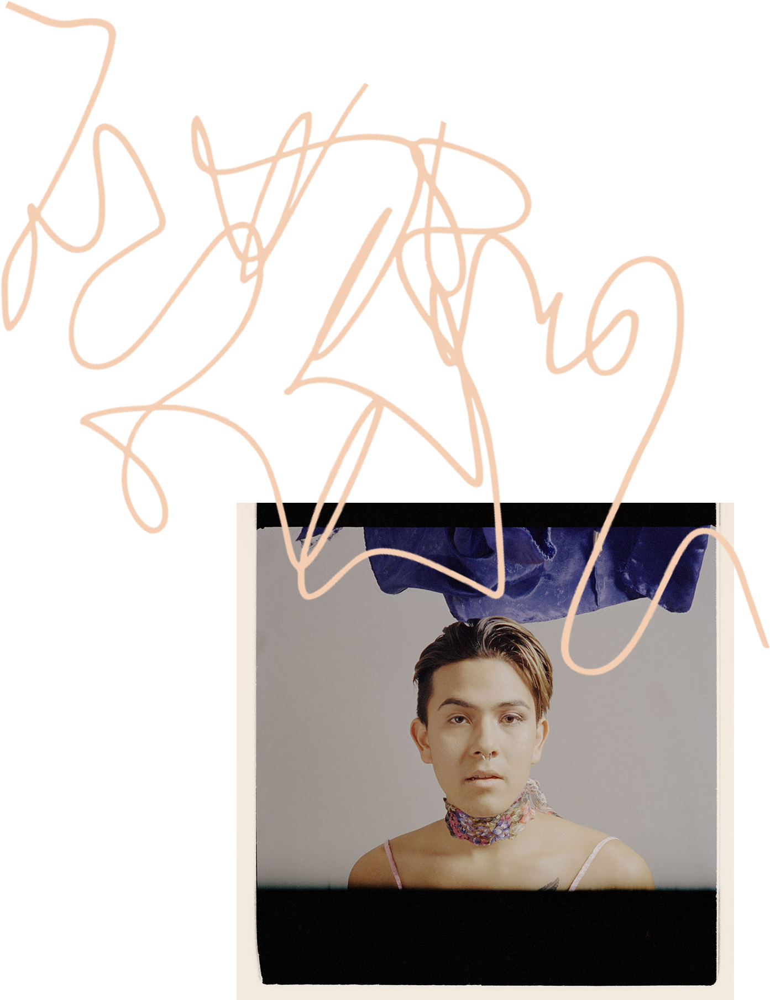

IN BETWEEN
What is identity? How do we come to terms with
the core traits that define us, especially for those
that find themselves at the intersection of multiple
and sometimes conflicting identities? And do our
separate identities become something new?
As we move deeper into a direction that honors both representation and individuality, we also must open the space for a new generation of voices to emerge, listen, and embrace a narrative that is not as structured as what we have known.
Shame settles into my chest as I wait my turn to take communion on Sunday, and the pastor reminds us that we should not partake if we are holding something from God.
I shake my head no at sleepovers when my friends ask me if I like anyone.
In 7th grade, I wait in line for the yearbook photos to be taken. I pose, self consciously, widening my eyes as the photographer counts down. I tell myself, if only I were white, I’d be much happier.
My friend tells me that Asians are either really ugly or really pretty. She tells me I’m lucky I’m one of the pretty ones. My friends tell a racist joke about Asians as I stand uncomfortably in their circle.
They tell me that it does not apply to me. I’m one of them after all. They do not see me as Asian. I go to college and meet people who are queer and liberal and everything that my hometown is not. I’m afraid to tell these people that I still believe in God.
As an Asian American adoptee, it took me a long time to understand myself — in accepting, exploring, and appreciating what it means to be Asian, but also having an experience that differed from non American Asians, and even from Asian Americans who were raised with a cultural or familial tie to their ethnic identity. Growing up, I was in a sense, both Asian and white. At the same time, I was neither Asian nor white. My identity was overwhelmed by a sense of otherness, and I felt that I existed in between.
I still believed in God, but what did it look like to engage with both queerness and a faith that traditionally condemned it? My queerness felt at odds with my Christianity, and the complexity of how each lens of my own identity allowed me to see the world became a confusing space to navigate.
I searched for myself in the representation of queer Asians, or Asian adoptees, or those at peace with both their sexual or gender identity and their religion. I never saw another version of myself when I needed it most.
My identity became an unraveling. Had I seen myself in others, would things have changed?
Time and time again and day after day I could not bring myself to move my lips to get the words to come out. And just as sure as the hands of the clock are to strike the number twelve, I failed every chance I could. My lips would not part. Until one day when they did.
One of those days I slipped. For a fraction of a second, I forgot where I was and who I was and I thought that those whispered words had made their way to his ears. They didn’t. And even though they didn’t, I thought about ending it all. But if I had decided to jump into a pool and sit at the bottom, I know I would have held my breath. So, I didn’t. Jump that is.
I decided to live and to continue on. My father never did hear those words or at least if he did he never let them escape another pair of lips. Every rest day when I’m home we still reach out to God, but instead of reaching out to Him I just sit there in the same hidden silence. The silence that still haunts me to this day. For this is the burden of being a black crow in a world full of snow.

In Rochester, I felt welcomed, but I don’t think it is easy to feel completely comfortable when you look and act differently. I had always been so judgmental of myself for the aspects that I am now proud of. I identify as a genderqueer male. I don’t mind she/her pronouns, but respect it most when people ask before making assumptions. There are times when my body does not look as masculine as I want it to, but I would never undergo body modifications to please other people.
When I model, I feel strong as a fierce female character, but weak and lost when I am pressured to portray a masculine subject. My body is male, and I am male, but this does not mean that my mentality follows the same rules as most males abide to. There is a whole social aspect in the way you should act, talk, or even walk.
The world is going towards a gender revolution, and I want to be a part of it by fighting back stereotypes and old-fashioned ideals.
We are humans, and we are diverse in all aspects.
The people that have disrespected me don’t know what it means to feel outside the structure that society has created, and they don’t fully understand how comments of endearment are at times, actually hurtful.
General education does not teach this subject, so our media must. My identity elevates my art as a photographer, and allows me to touch people’s hearts, open their eyes, and enables their brains to be nourished by the light of this revolution of gender and sex as more than just an identity.